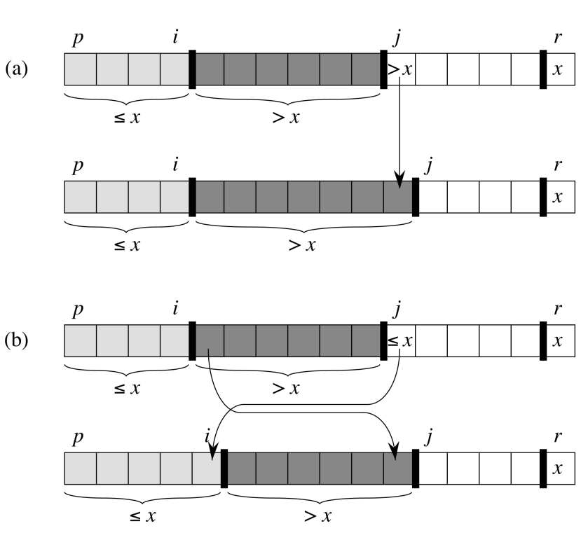
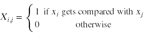
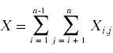
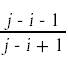
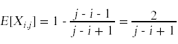
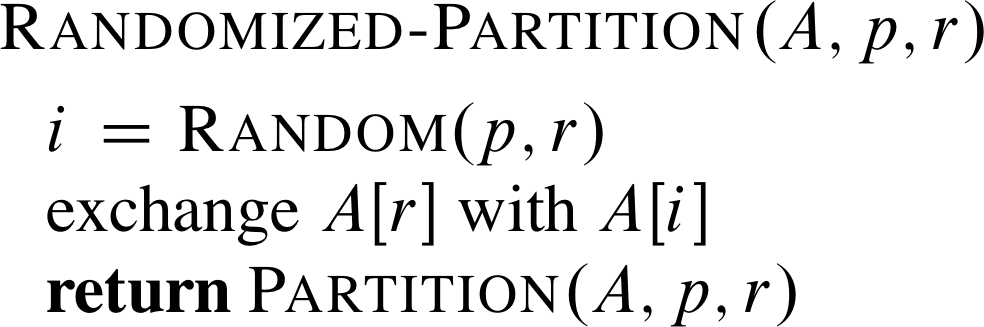
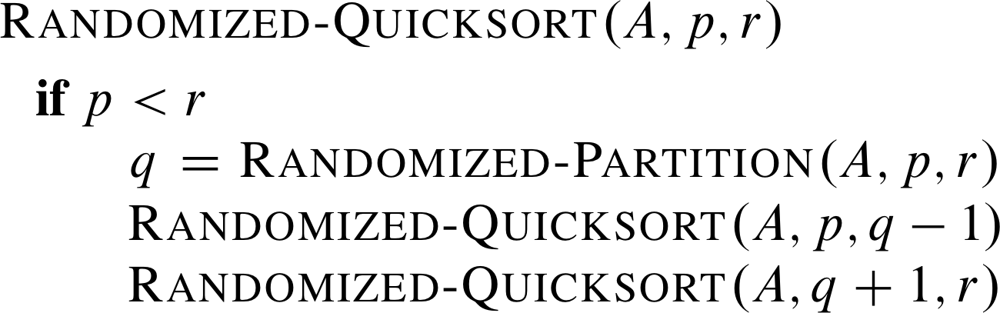

The Quicksort algorithm
QUICKSORT(A,p,r)
if p < r
q = PARTITION(A,p,r)
QUICKSORT(A,p,q-1)
QUICKSORT(A,q+1,r)
PARTITION(A,p,r)
x = A[r]
i = p-1
for j = p to r-1
if A[j] <= x
i = i + 1
exchange A[i] with A[j]
exchange A[i+1] with A[r]
return i + 1

Computing the runtime efficiency of Quicksort
Here are some key observations about the behavior of Quicksort:
- Almost all of the work that Quicksort does takes place in the calls to Partition.
- One of the most frequent operations in a call to Partition is the comparison test.
- The total work done in a call to Partition is bounded above by some multiple of the number of times the comparison test runs.
- The comparison test compares the current pivot against other numbers in the subarray.
- Once a number gets to be a pivot in a call to Partition, no other call to Partition will use that number in any way.
- If we index the numbers in the original list by their final position in the array after sorting, then we can see that xi will get compared with xj if and only if one of these two numbers gets to be a pivot before any of the numbers between them is chosen as a pivot.
Here is a probabilistic argument that estimates the total number of comparisons.
Introduce the random variable

In terms of this variable, the random variable that represents the total number of comparisons is

We want to compute the expected value of X, which will yield the total number of comparisons in Quicksort.

E[Xi,j] is just the probability that xi gets compared with xj. What is that probability? It is easiest to compute the probability that xi does not get compared with xj: that will happen if any of the numbers between xi and xj gets chosen as pivot first. Assuming that every number has an equal probability of being chosen first, that probability is simply

Thus

and

Randomized Quicksort

